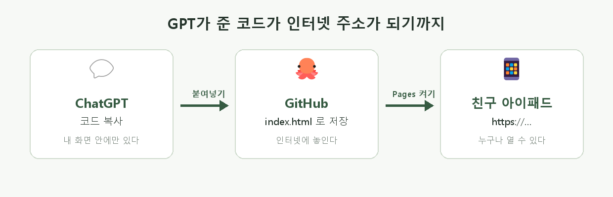
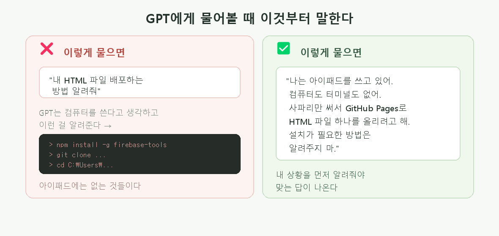
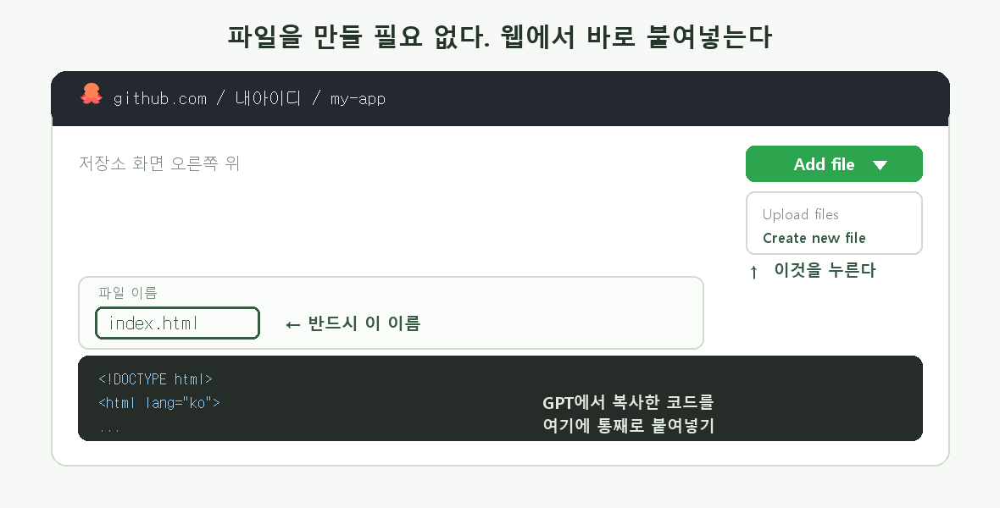
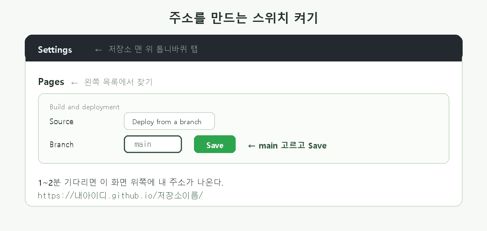
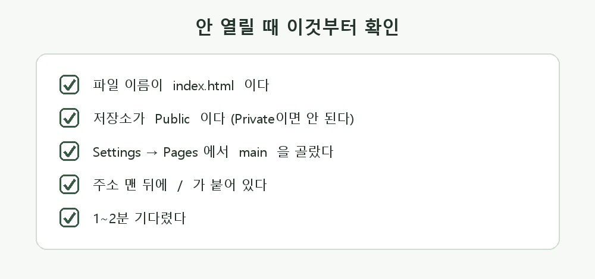

아이패드 · 사파리만으로 · 설치 없이 · 15분
GPT가 만들어준 코드는 지금 내 화면 안에만 있다. 친구한테 보여주려면 캡처를 보내야 하고, 눌러볼 수도 없다.
인터넷에 올리면 주소 하나로 누구나 열 수 있다. 그 주소를 NFC 태그에 넣을 수도 있다.

배포하다 막히면 GPT에게 물어볼 것이다. 그런데 그냥 물으면 십중팔구 틀린 답이 온다.

GPT는 내가 어떤 기기를 쓰는지 모른다. 그래서 컴퓨터를 쓴다고 짐작하고 터미널에 명령어를 치라고 알려준다. 아이패드에는 터미널이 없다.
나는 아이패드를 쓰고 있어. 컴퓨터도 터미널도 없어. 사파리 브라우저만 써서 GitHub Pages로 HTML 파일 하나를 인터넷에 올리려고 해. 설치가 필요하거나 명령어를 치는 방법은 알려주지 마. 웹 화면에서 누르는 것만으로 되는 방법을 한 단계씩 알려줘.
터미널, 명령 프롬프트, 설치, npm, cd 같은 말이 나오면 아이패드에서 안 되는 방법이다. 이렇게 다시 말하자.
나는 아이패드라서 터미널이 없어. 그 방법은 못 써. 사파리에서 화면을 누르는 것만으로 되는 방법으로 다시 알려줘.
https://내아이디.github.io/... ← 나중에 바꾸기 번거롭다.
GitHub에서는 프로젝트 하나를 저장소(Repository)라고 한다.
my-app, reading-app)아이패드에 파일을 만들 필요가 없다. GitHub 웹에서 바로 만든다.

index.html 을 정확히 친다index.htmlIndex.html(대문자), index.htm, app.html 전부 안 된다.
GPT가 다른 이름으로 알려줬어도 index.html로 바꿔서 만들자.
파일만 올렸다고 주소가 생기진 않는다. 한 번 켜줘야 한다.

새로고침하면 화면 위쪽에 초록색으로 주소가 나온다.
이 주소가 내 앱이다. 폰에서 열어보자 🎉
GPT에게 수정을 부탁해서 새 코드를 통째로 받는 게 가장 쉽다.
index.html 을 누른다이 부분을 이렇게 고쳐줘. 고친 전체 코드를 처음부터 끝까지 한 번에 줘. 바뀐 부분만 주지 말고, 통째로 복사할 수 있게.
?v=2를 붙여보자.
에러가 나면 화면에 뜬 글자를 그대로 복사해서 붙여넣는다. 내 말로 바꿔 쓰면 GPT가 못 알아본다.
나는 아이패드 사파리에서 GitHub Pages로 index.html을 올리는 중이야. 지금까지 이렇게 했어: (내가 한 순서를 적기) 그런데 이런 화면이 나왔어: (화면에 뜬 글자를 그대로 붙여넣기) 설치나 터미널 없이 해결하는 방법을 알려줘.

| 이런 일이 | 이렇게 하면 된다 |
|---|---|
| 404 라고만 나온다 | 파일 이름이 index.html이 맞는지 / 1~2분 기다렸는지 확인 |
| Settings에 Pages가 없다 | 저장소가 Private이다. Settings 맨 아래에서 Public으로 바꾸자 |
| 화면은 나오는데 글씨가 다 깨짐 | 코드 맨 위에 <meta charset="UTF-8">가 있는지 확인 |
| 이미지가 안 보인다 | 내 아이패드 안의 사진은 남에게 안 보인다. 이미지도 GitHub에 같이 올려야 한다 |
| 코드가 글자로만 보인다 | 파일 이름 끝이 .html이 아니다. .txt가 붙었는지 확인 |
| 붙여넣기가 안 된다 | 칸을 길게 눌러 붙여넣기 선택. 안 되면 데스크탑 웹사이트 요청 |
GPT가 준 코드는 화면이 그럴듯해도 절반은 안 움직일 수 있다.
버튼에 '저장'이라고 써 있어도 진짜 저장되는지는 눌러봐야 안다. 글씨는 우리가 아무렇게나 쓸 수 있기 때문이다.
올린 다음 폰에서 직접 열어서 하나씩 눌러보자. 안 되는 걸 찾아내는 게 진짜 실력이다.